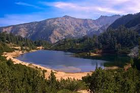
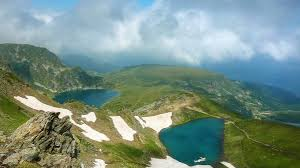
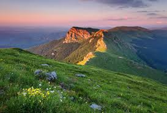

Добре дошли в Националните паркове на България
България разполага с три национални парка – Рила, Пирин и Централен Балкан. Те са защитени територии с уникална природа, където се съхраняват редки растения и животни.
Изберете парк или се запознайте с автора чрез бутоните по-долу:
 |
 |
 |
Защо е важно да ги опазваме?
Националните паркове помагат за опазване на редки видове, чистота на водите и баланс на климата. Пирин и части от Централен Балкан са признати от ЮНЕСКО за световно наследство.